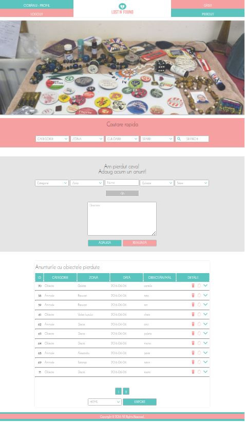

Lost And Found
Cuprins:
Descriere
Acest proiect care ca rol esential dezvoltarea unui site, care va gestiona informatiile legate de obiectele/animalele gasite sau pierdute de catre anumite persoane (utilizatori). Anunturile vor putea fi adaugate, editate sau sterse.
Aceasta aplicatie web va permite fiecarui utiliazator sa se inregistreze sau autentifice, avand drepturi de creare, editare si vizualizare a anunturilor. Fiecare membru are drepturi depline asupra anuntului publicat de el si doar de vizualizare a anunturilor create de catre alte persoane inregistrate.
Fiecare anunt contine un camp pentru categorie, zona, perioada, inapoiere si detalii. Detaliile vor putea fi accesate la apasarea unui buton care face ca detaliile sa fie vizibile. Acestea constau in campuri pentru a determina culoarea, starea obiectului gasit sau pierdut si alte detalii caracteristice obiectului/animalului. Totodata putem adauga daca dorim sau nu o imagine sau mai multe, acest camp nefiind obligatoriu.
Toti utilizatorii vor putea folosi filtrele de cautare in functie de categorie, zona sau alte campuri. Ca si exemplu, daca am pierdut un telefon si vrem mai intai sa cautam obliectul in lista celor pierdute, putem selecta la categorie "obiect", zona "alexandru" si astfel vom putea vedea toate anunturile care contin obiecte pierdute doar in zona alexandru.
Tehnologii Folosite
In realizarea acestui proiect am folosit urmatoarele tehnologii:
- HTML5/CSS3: acestea sunt folosite pentru realizarea structurii aplicatiei si stilizarea ei intr-o maniera optima si un design simplu si accesibil.
- PHP și JavaScript: acestea sunt folosite pentru a adauga functionalitate si mobilitate aplicatiei noastre, de exeplu: folosirea lor pentru autentificare, pentru vizializare detalii, filtrarea datelor, etc.
- MySQL: un sistem de baze de date
Baza de date
Baza de date memoreaza toate anunturile realizate de utilizatori cat si datele utilizatorilor inregistrati. Vor fi realizate doua tabele in acest scop. Astfel, una va fi denumita Utilizator, pentru a salva inregistrarile realizate de utilizatori si o alta tabela denumita Anunturi, ce are rolul de a retine toate anunturile realizate de catre utilizator
| Utilizator | Anunturi |
ID |
Nume |
User |
Email |
Password |
Telefon |
Phone: |
Categorie |
Zona |
|
Cuvant cheie |
|
Predare |
|
Culoare |
Orice utilizator autentificat va avea un ID cat si un nume pentru a putea fi recunoscut, parola si un numar de telefon care va fi optional.
Structura Aplicatiei Web
Aplicatia este realizata prin integrarea a 6 pagini. Una va fi cea de baza(index) si cate una pentru autentificare, inregistrare, obiecte pierdute si obiecte gasite.
Pagina Principala Index/Home,este pagina ce contine toate elementele necesare navigarii.
Initial se pot vizualiza ultimele 10 anunturi adaugate.

Pentru a putea introduce si vizualiza anunturile este nevoie de inregistrare prin completarea campurilor speciale.
Daca suntem deja inregistrati in baza de date ca si utilizatori, atunci este necesara doar partea de autentificare prin completarea campurilor afisate.

Dupa inregistrare/autentificare, putem naviga pe pagina ce contine anunturi despre obiectele Pierdute . Acolo putem cauta prin parcurgerea tuturor anunturilor sau prin introducerea unui nou anunt prin care se va specifica ce anume s-a pierdut, completand campurile speciale.
Dupa inregistrare/autentificare, putem naviga pe pagina ce contine anunturi despre obiectele Gasite. Acolo putem cauta prin parcurgerea tuturor anunturilor sau prin introducerea unui nou anunt prin care se va specifica ce anume s-a gasit, completand campurile speciale.

Pentru fiecare pagina de "gasit" sau "pierdut" am implementat elementele de export si paginare sub fiecare tabel cu anunturi. Pentru functionalitatea de export avem optiunea de a selecta 4 tipuri de formate: HTML, JSON, PDF si CSV.

Meniul este constantsi se regaseste in fiecare dintre cele 5 pagini.
- Home – va face trimiterea către pagina principala apasand pe Logo.
- Inregistrare – va face trimiterea către pagina pe care se vor face inregistrarile in baza de date ale utilizatorului nou prin completarea campurilor specifice.
- Autentificare – va face trimiterea către pagina pe care ne vom putrea autentifica daca avem deja un cont creat in baza de date nemifiind nevoie sa facem un alt cont nou.
- Pierdut – va face trimiterea către pagina in care vom regasi anunturi despre obiecte pierdute si se vor putea adauga anunturi noi cu obiectele ce au fost pierdute.
- Gasit – va face trimiterea către pagina in care vom regasi anunturi despre obiecte gasite si se vor putea adauga anunturi noi cu obiectele ce au fost gasite.
Dupa inregistrarea utilizatorului, butonul de "inregistrare se va schimba in "nume_user - PROFIL" iar cel de " autentificare" in "logout".
Pagina utilizatorului este activa doar dupa autentificare. Aceasta contine o sectiune cu datele de la inregistarre ale userului iar apoi o sectiune cu lista anunturilor postate de acel user inregistrat. Acesta va avea voie sa editeze, sa elimine si sa vizualizeze anunturile sale.
La accesarea optiunii de Editare din pagina utilizatorului, se va deschide un modal in care vom putea edita campurile predefinite la fel ca cele de la adaugarea unui nou anunt.
La accesarea optiunii de Eliminare din pagina utilizatorului, se va deschide un modal in care vom putea sterge anuntul selectat
La accesarea optiunii de Vizualizare din pagina utilizatorului, se va deschide un modal in care vom putea vizualiza campurile predefinite cu datele introduse la crearea lui initiala.